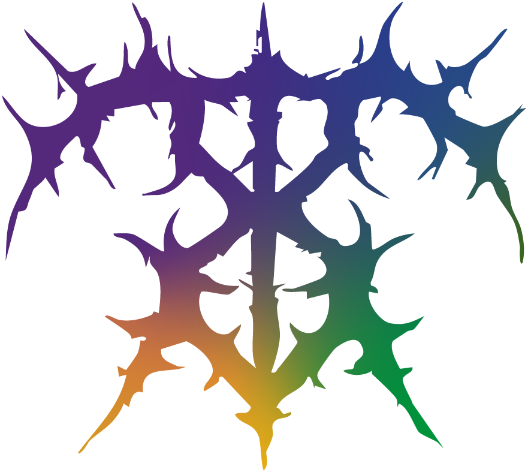
HOME
INFO
PROJECTS
WHEN YOU SLEEP
AI MUSIC TOOL
RED CLOVER SUGAR STUDIO
CONNECT
C:\Users\Tyler\Portfolio\Info
NAME: "Tyler Bradshaw"
👁
ABOUT:
C:\Users\Tyler\Portfolio\Assets\Self
C:\Users\Tyler\Portfolio\WhenYouSleep
PROJECT: "Interactive Multimedia Website for When You Sleep (Band)"
👁
BACKGROUND:
👁
PROBLEM:
👁
PROCESS:
👁
RESULTS:
C:\Users\Tyler\Portfolio\Assets\WYS1.png
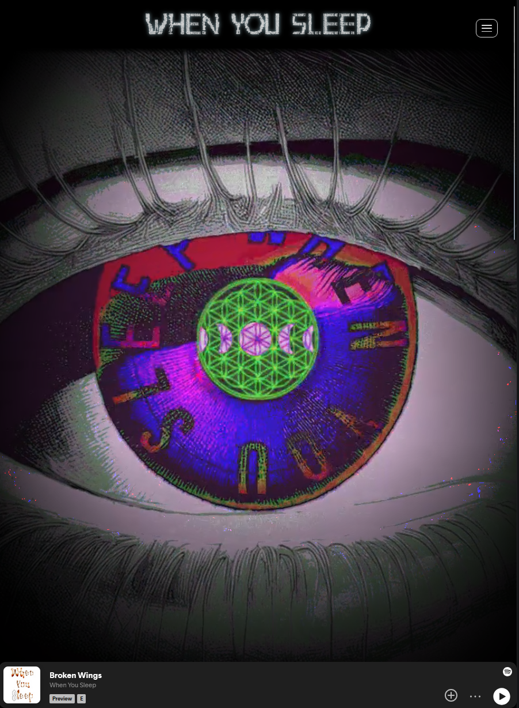
C:\Users\Tyler\Portfolio\Assets\WYS2.png
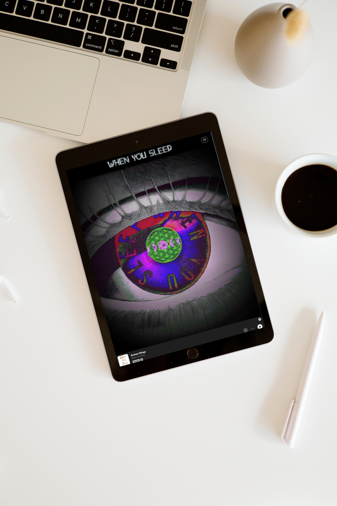
C:\Users\Tyler\Portfolio\Assets\WYS3.png
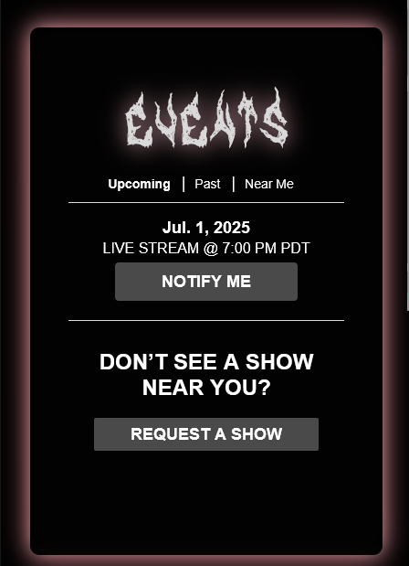
C:\Users\Tyler\Portfolio\Assets\WYS4.png
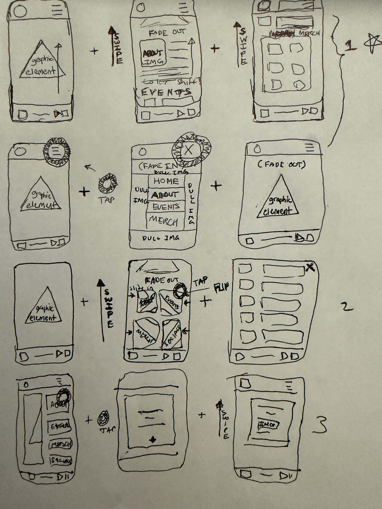
C:\Users\Tyler\Portfolio\AIMCT
PROJECT: "AI Music Collaboration Tool (WIP)
👁
BACKGROUND:
👁
PROBLEM:
👁
PROCESS:
👁
RESULTS:
C:\Users\Tyler\Portfolio\Assets\Wireframe.png
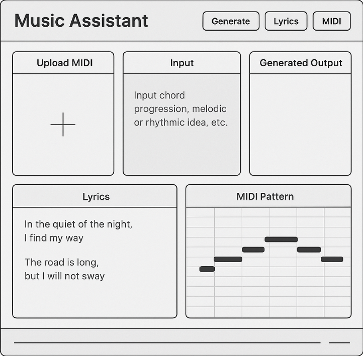
C:\Users\Tyler\Portfolio\Assets\Map.png
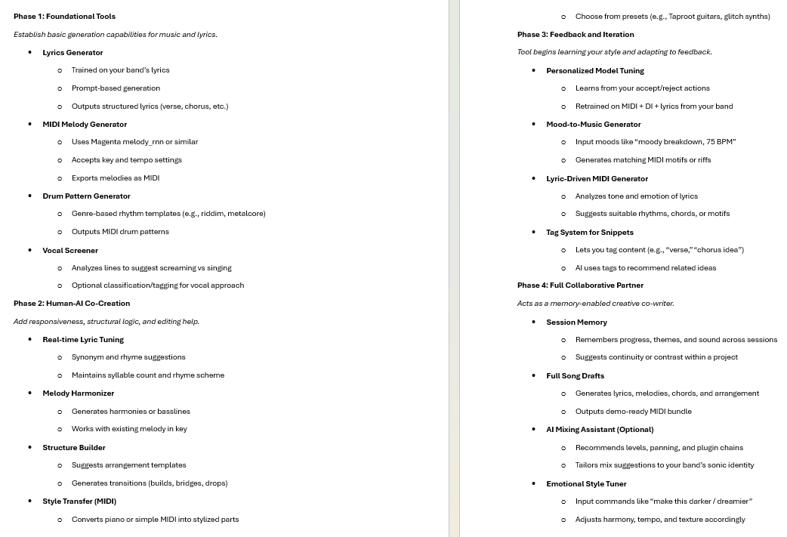
C:\Users\Tyler\Portfolio\Assets\Flow.png
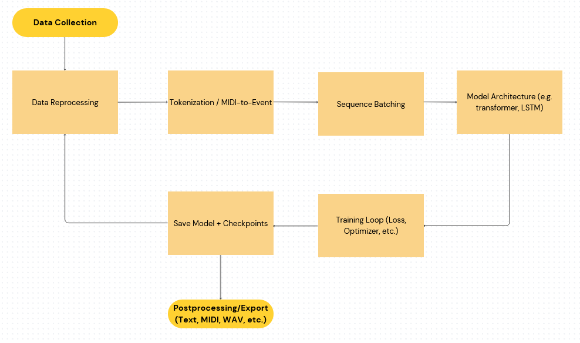
C:\Users\Tyler\Portfolio\Assets\
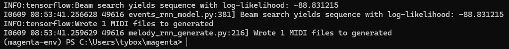
C:\Users\Tyler\Portfolio\RedClover
PROJECT: "Small-Business Web Design for Red Clover Sugar Studio"
👁
BACKGROUND:
👁
PROBLEM:
👁
PROCESS:
👁
RESULTS:
C:\Users\Tyler\Portfolio\Assets\RCHome.png
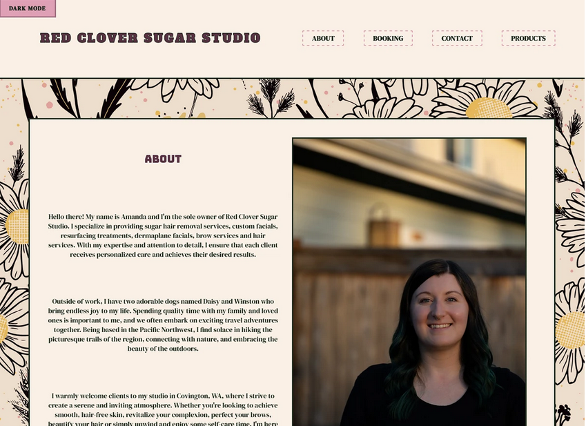
C:\Users\Tyler\Portfolio\Assets\RCPalette.png
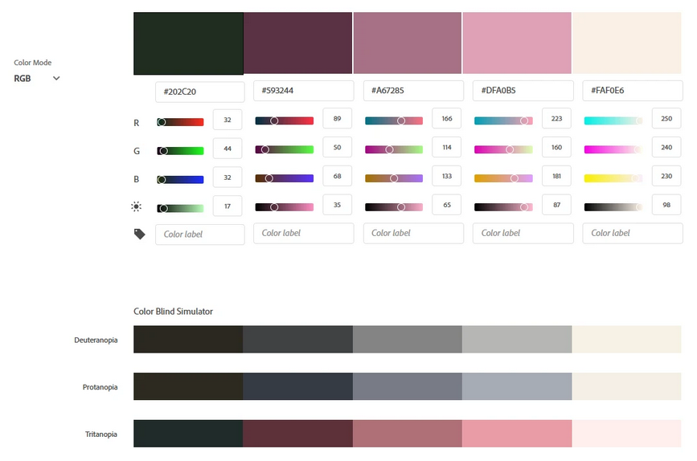
C:\Users\Tyler\Portfolio\Assets\Calc.png
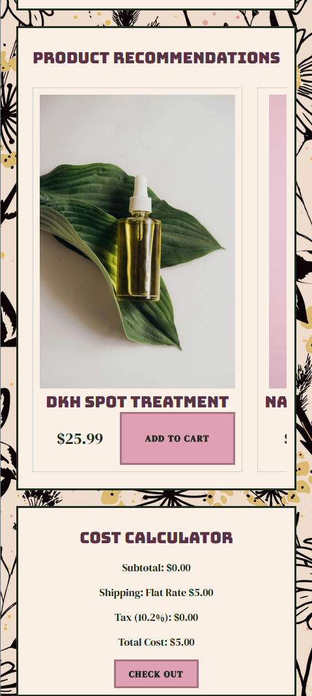
C:\Users\Tyler\Portfolio\Assets\Ratio.png
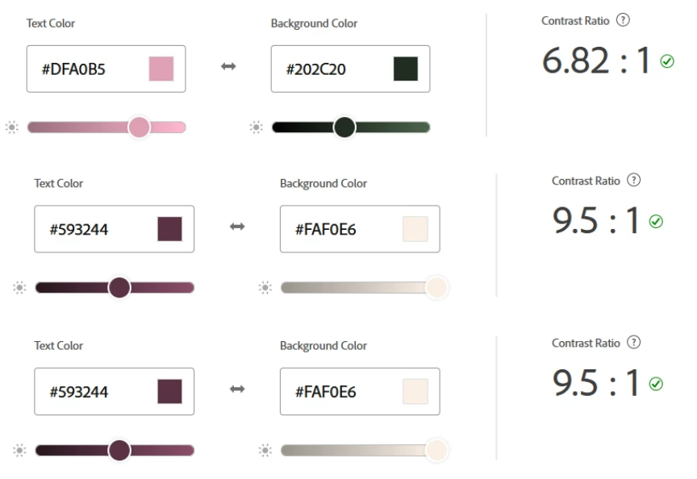
C:\Users\Tyler\Portfolio\Contact
NAME:
EMAIL:
MESSAGE:
[ SEND MESSAGE ]